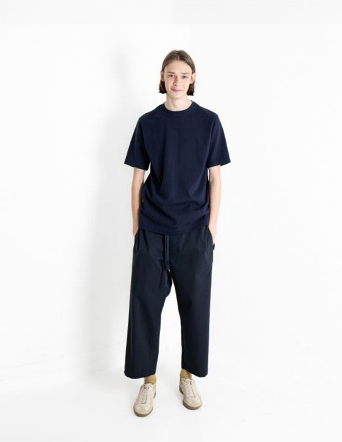

도큐먼트는 입는 사람 각자의 소중한 기억이 반영되어 자신만의 my document 가 되는 과정의 최소한의 표현이 됩니다. 프랑스 철학자 쥘 들뢰즈(GILLES DELEUZE) 의 '차이와 반복'(repetition and difference) 이라는 주제아래 제한된 컬러와 좋은 품질의 원료에 대한 절제된 접근으로 그 안에서의 미묘한 차이의 반복을 추구합니다. 보여지는 외관보다 보이지 않는 곳에 집중함으로써 입는 사람의 의해 발견되어지는 디테일과 집중된 컬러 팔레트에서 미묘한 톤 변화로 달라지는 뉘앙스를 이야기합니다.
반복과 차이 _ REPETITION AND DIFFERENCE ( Gilles Deleuze )